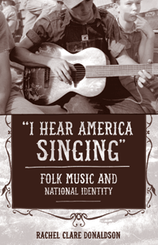

How the folk music revival gave voice to ideas about the essence of American character and values
How the folk music revival gave voice to ideas about the essence of American character and values


 How the folk music revival gave voice to ideas about the essence of American character and values
How the folk music revival gave voice to ideas about the essence of American character and values

|  |
"I Hear America Singing"Folk Music and National IdentityRachel Clare Donaldsonpaper EAN: 978-1-43991-079-5 (ISBN: 1-4399-1079-0) |
"‘I Hear America Singing’ is an exciting, splendid book. American folk music is a well-mined field, but one to which Donaldson brings a fresh interpretative lens, integrating it with the social and political history of postwar (Cold War) America and the sixties. The heart of the book, however, is its forty-year history, which distinguishes between the various strains of the folk revival and sees the folk music movement as having helped create a democratic national identity. This will be a strong and compelling volume in mid-century American cultural history."
—Daniel Walkowitz, Professor in the Department of History and the Department of Social and Cultural Analysis at New York University and author of City Folk: English Country Dance and the Politics of the Folk in Modern America
Folk music is more than an idealized reminder of a simpler past. It reveals a great deal about present-day understandings of community and belonging. It celebrates the shared traditions that define a group or nation. In America, folk music—from African American spirituals to English ballads and protest songs—renders the imagined community more tangible and comprises a critical component of our diverse national heritage.
In "I Hear America Singing," Rachel Donaldson traces the vibrant history of the twentieth-century folk music revival from its origins in the 1930s through its end in the late 1960s. She investigates the relationship between the revival and concepts of nationalism, showing how key figures in the revival—including Pete Seeger, Alan Lomax, Moses Asch, and Ralph Rinzler—used songs to influence the ways in which Americans understood the values, the culture, and the people of their own nation.
As Donaldson chronicles how cultural norms were shaped over the course of the mid-twentieth century, she underscores how various groups within the revival and their views shifted over time. "I Hear America Singing" provides a stirring account of how and why the revivalists sustained their culturally pluralist and politically democratic Americanism over this tumultuous period in American history.
Excerpt available at www.temple.edu/tempress
"‘I Hear America Singing’ is a very impressive intellectual history of the folk revival that expands its boundaries as it extends our understanding. American folk music differs from its European counterpart in that it has seldom served conservative political interests. On the contrary, as Donaldson so well demonstrates, it has more often been a bearer of progressive democratic traditions. While European nationalist movements have used folk traditions to foster ethnic purity, the American folk revival studied in detail here articulated and disseminated pluralist ethnic traditions and civic participation. Beyond the focus on intellectual history and intellectuals, one can hear the people singing in the background."
—Ron Eyerman, Professor of Sociology and Co-director of the Center for Cultural Sociology at Yale University
"Donaldson create[s] what she refers to as an 'intellectual history of the folk revival,' which she positions in the US between the 1930s and 60s. and which she links to left-wing politics."
— Songlines
"The best intellectual history to date on the subject, this book treats the part of the US folk music revival that aligned itself with progressive politics from the 1930s through the 1960s. Donaldson chronicles the folk revival’s involvement with the Depression and New Deal, WW II and the Cold War, and the Civil Rights Movement.... [S]he provides an excellent discussion of the Pete Seeger side of the revival.... [T]hose interested in folk music per se and its intersection with progressive politics during these critical decades will find this book valuable. Summing Up: Recommended."
—CHOICE
"Rachel Clare Donaldson's book focuses on folk music as a source of national identity… [She] does an excellent job of explaining how various non-political portions of the revival, especially the National Folk Festival, presented folk music as a living example of pluralism in American life.… [Donaldson’s] insights from historical, sociological, or cultural studies perspectives—[are] useful."
—Popular Music and Society
“By placing the history of folk music within a social movement framework, Donaldson is able to [situate] folk music within a broader discourse on ‘national identity.’... Considering folk music as a social movement that continuously wrestles with the question of civic identity provides an important contribution.”
—Journal of American History
"[A] scholarly, informative and in-depth new book.... 'I Hear America Singing' is a fantastic book and overview of the mid-20th century folk music revival which seemed to also double as a social justice movement, considering its support of civil rights, and speaking out against war and injustice. This is an important book from a scholar deserving of attention."
—Red Dirt Report
"Writing what she describes as an intellectual history of this revival, Donaldson focus on the folk music world's leading figures, the ways in which they interpreted the slippery term folk music, and the programs they created to disseminate the music.... "I Hear America Singing" joins a growing cohort of works on the folk music revival in the U.S.... [It] earns its place in this company in its clear exposition of how the folk music movement's leading figures believed in their mission and how that mission reflected democratic political ideals."
— The American Historical Review
"Donaldson delivers a comprehensive 'intellectual history of the folk revival' from the 1930s to the 1970s.... This is a welcome addition to the historiography that puts the entirety of the revival era under one broad umbrella and within a concise narrative."
— Ohio Valley History
"The history of folklore is a well-measured field of study, but th[is] book adds new insights to the topic of folklore and cultural policy by combining the intellectual history of the folk revival with the history of the social movements of the investigated period, focusing on the main pop-cultural and political tendencies.... 'I Hear America Singing' is a thoroughly researched and elegantly written book. Donaldson fashions a fascinating narrative of how folk music and political ideas are intertwined and how folklore can shape and is shaped by cultural politics."
— Journal of Folklore Research
"Donaldson has made at least three important and intelligent choices about how to examine her subject. Rather than focusing on commercial success or other measures of popularity, Donaldson approaches the folk revival from the top down. She analyzes the work of a variety of leaders who shaped the way folk music was defined, collected, and disseminated. In turn, Donaldson’s focus on folklorists, anthropologists, and other organized leaders in the field, allows her to expand the chronology of the folk revival. She identifies the roots of the revival in the first decades of the twentieth century and explores its full emergence in the 1930s. Finally, by taking seriously the motivations of a diverse—and often divergent—group of leaders, Donaldson can identify the core philosophy underneath their work. Taken together, these choices allow Donaldson to argue that the folk music revival is important as a window not only into American popular culture, but also into the formation of American national identity. Donaldson’s work provides a new context for understanding the significance of American folk music."
—American Studies, Vol. 54, No. 4
"This book corrects the oversimplified notion that the folk-music revival was a midcentury fad that peaked in the 1960s and then vanished forever.... Donaldson concludes her survey by making a satisfying, and somewhat convincing, case that folk music lives on within national and regional folk festivals, where the people who live the tradition continue to play and sing their music to small appreciative audiences.... For fans of folk music, Donaldson does an outstanding job of distinguishing the major players in the folk revival: her book serves as a handy who's-who guide to them.... This book is an education for those who were never quite sure how the folksong revival got started or what happened to folk music once its pop-music boom ended. Donaldson is a knowledgeable critic."
—The Journal of American Culture
"Setting out to explore what it means to be American by looking at the country’s music, Donaldson shows the symbiotic relationship between music and politics from roughly the 1930s to the 1960s..... The book’s strength lies in its demonstration of the extra-musical aspects of the folk music revival.... [T]his is a compelling and interesting read, offering great insight into the different roles of how music worked to shape American political identity."
—Popular Music
"The question of 'Americanness' is at the forefront of Rachel Clare Donaldson’s 'I Hear America Singing,' a meticulous intellectual history of the folk revival of the early to mid-twentieth century.... Donaldson describes this process in engrossing detail.... [Her] framing of [the] issues in a folk-specific context offers a fresh perspective..... 'I Hear America Singing' is pivotal to our understandings of the folk revival, the contexts from which it emerged, and the ongoing, perhaps quixotic quest to discover the 'real America' and its music."
—American Quarterly
Contents
Acknowledgments
Introduction
1. Hearing the People
2. The People’s War
3. Illusion and Disillusionment
4. Keeping the Torch Lit
5. The Boom
6. A Bust and a Beginning
Conclusion
Appendix: A Note on Resources for Recorded Music
Notes
Bibliography
Index
Rachel Clare Donaldson is an independent scholar and the co-author (with Ronald D. Cohen) of Roots of the Revival: Folk Music in the United States and Great Britain in the 1950s.
American Studies
Music and Dance
Race and Ethnicity
© 2017 Temple University. All Rights Reserved. This page: http://www.temple.edu/tempress/titles/2295_reg.html.